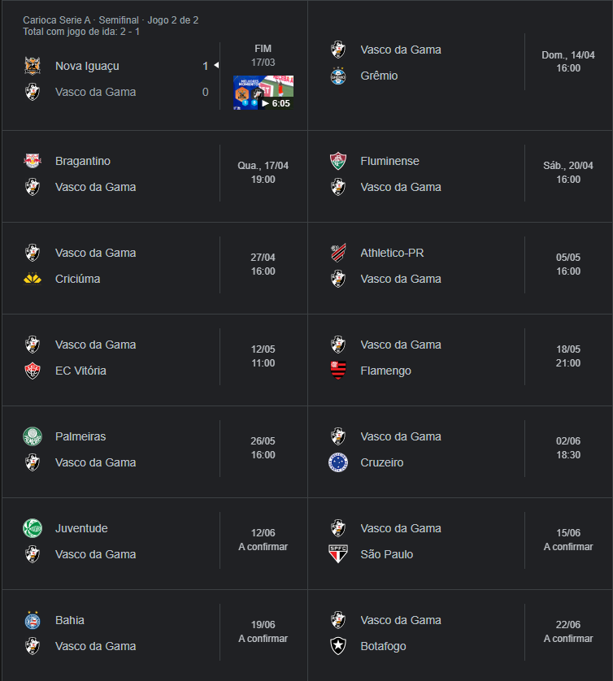

história
O Vasco foi fundado como um clube de remo em 1898, por um grupo de 63 rapazes, imigrantes portugueses e luso-descendentes, reunidos no bairro da Saúde. O nome escolhido foi Club de Regatas Vasco da Gama, pois naquele ano eram comemorados os 400 anos da viagem do almirante homônimo à Índia. maluco era quente fi ixquece
jogadores
o elenco principal do vasco da gama hoje em dia é composto por:
- Leo Jardim (goat)
- Joao victor
- gary medel
- Lucas Piton
- pulma rodriges
- juan sforza
- pablo galdames
- dimitri payet
- adson
- clayton
- pablo vegetti
o time é comandado pelo treinador Ramon Dias
partidas
o vasco disputará o brasileirão e estreina nesse domingo
